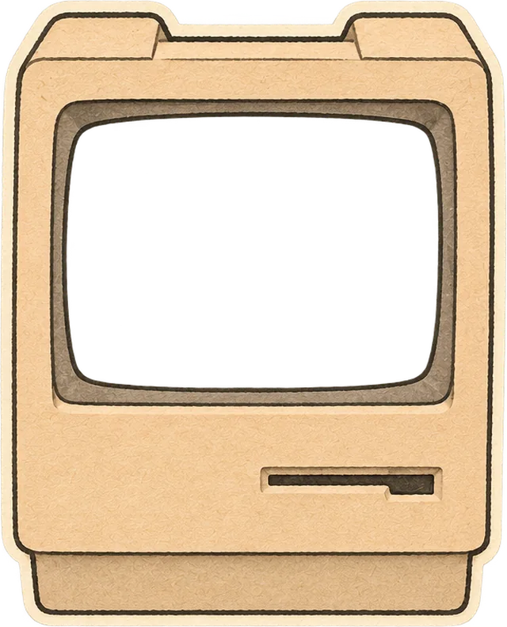
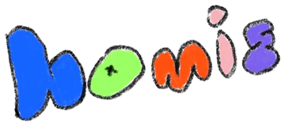

your stuff stays yours.
your chats, files and voice get handled right on your Mac. nothing gets uploaded, stored on a server, or used to train someone's model.

01 · privacy

meet homie ↘
homie is a free AI buddy that lives on your Mac. talk to it, it gets stuff done, and your stuff never leaves your computer.
Apple silicon · macOS 26 or later
"the cloud"
(someone else's computer)
your stuff
stays here
4 reasons your AI should live at home, not in a data center
your chats, files and voice get handled right on your Mac. nothing gets uploaded, stored on a server, or used to train someone's model.

01 · privacy
big AI companies keep everyone's data in one giant pile. that's what hackers go after. a breach can't leak what was never uploaded.
02 · don't get hacked
cloud AI runs in warehouses of servers that drink water and burn power around the clock. homie runs on the Mac you already own.
03 · the planet
closed AI can change the rules, raise the price or get switched off overnight. homie runs on open models that live on your machine. it's yours.
04 · power
open source · 100% local ↘
homie runs open-source models locally on your Mac: a 4-billion-weight brain, a voice and ears. here's exactly what's running, how it works, and why none of it ever phones a data center.
they flip themselves. the nerd stuff is on the back
for the nerds. every arrow below stays on 127.0.0.1
27 tools. its own cursor. it plays, draws, clicks and types for you
every dot is a million tiny numbers. that's how a brain like this remembers language.
homie's brain has 4,000,000,000 of them.
we squish each one down to 4 bits, so the whole thing packs into 2.7 GB. smaller than a few movies.
the big cloud brains are hundreds of times bigger. they need a warehouse. homie needs your Mac.
homie stands on the shoulders of homies. the models are open, and we're open-sourcing homie too, so anyone can see exactly what runs on their Mac. no secrets in the walls.
(go on, move 'em around)
tap your Mac. see how homie feels on it
chip
which one?
memory
not sure? Apple menu → About This Mac. it's right there.
RUNS GREAT
memory
homie macOS free for your apps
speed ~31 tokens/s
▌
speeds are estimates from each chip's memory speed, based on one real Mac (M5, 16 GB: 31 tokens/s). homie needs Apple silicon + macOS 26 or later.
your voice and words stay home. here's how to see it yourself
0bytes moved inside your Mac
0bytes of your voice + words sent out
# while homie is on, ask your Mac who the brain talks to
$ lsof -nP -i -a -c llama-server
# you'll see only this:
llama-ser TCP 127.0.0.1:19890 (LISTEN)
127.0.0.1 means "this Mac". if homie's brain ever called a server, you'd see an outside address here. you won't.
invite-only, for now ↘
we're letting people in a few at a time. here's how to skip the line
ask for a code on X and you end up up here. got in? you get the stamp
Apple silicon · macOS 26 or later
need more muscle? there's max for heavy lifting, in the cloud. your call, one switch.
join our discord